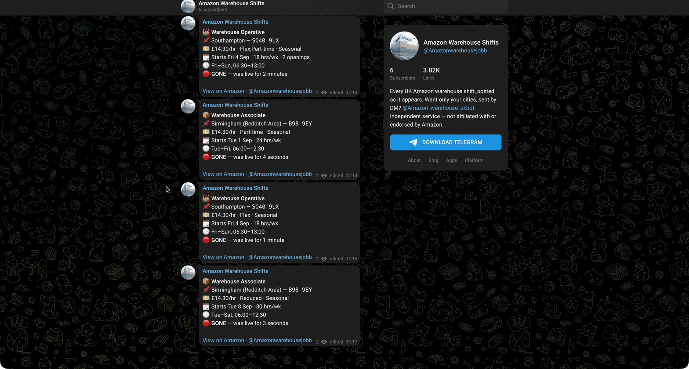
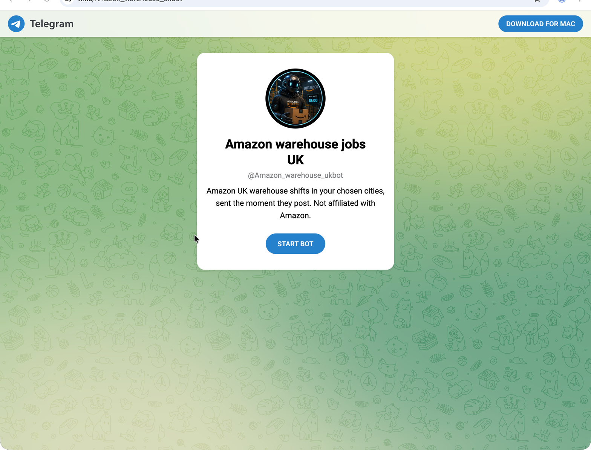
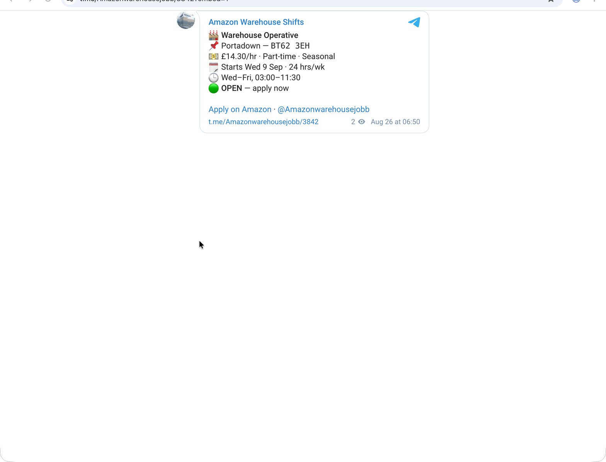

For warehouse workers
Find the shifts that fit your life.
Get focused shift alerts in Telegram, based on the days, times, distance, and pay you care about.
Start finding better-fit shiftsQuick setup · Easy to pause · No Amazon affiliation
YOUR ALERTS, YOUR WAY
S
ShiftSignal BotPersonalized alerts
Shift windowEvenings · 4–10 PM
✓Travel radiusWithin 15 miles
✓Minimum listed rate$20.00 / hour
✓NEW MATCH · JUST NOWEvening sort shift nearby4:30–9:00 PM · $21.50/hr
→Built around your attention
Not every shift deserves a notification.
01
Choose your filters
Start with your availability and preferences, not a wall of irrelevant listings.
02
See the important details
Time, location, duration, and listed rate are easy to scan in one Telegram message.
03
Stay in control
Pause alerts when you are busy. Resume when you are ready to look again.
See it in Telegram
Follow the feed or start the bot.
Choose the public channel for the latest posts, or use the bot for a more focused alert route.


Bot
Get a more personal route.
Start the bot and use Telegram to manage your alert preferences.
Start the botShiftSignal is independent. Telegram is used for delivery, and availability should always be checked before applying.
“
Less searching. More knowing what is worth opening.
— the ShiftSignal promise
01simple Telegram setup
04preference areas to tune
∞control stays with you
Before you tap start
Simple answers for a simple tool.
Is this connected to Amazon?
No. ShiftSignal is an independent tool. It is not affiliated with or endorsed by Amazon, and it does not replace any official employer or scheduling process.
What happens after I tap start?
Telegram opens a chat with the bot. The setup flow should ask for the preferences needed to send more relevant alerts.
Will I definitely get a shift?
No. Alerts are not guarantees. Shift availability can change, and any application or booking happens through the applicable official flow.
Your next good-fit shift could be easier to spot
Start with the hours you already know work.
Tell ShiftSignal what to look for. Let Telegram do the watching.
Open ShiftSignal in Telegram Independent service. Not affiliated with Amazon or any employer.